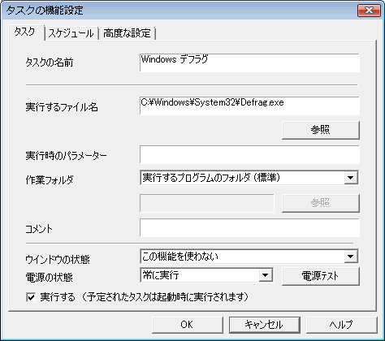
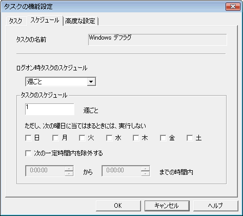
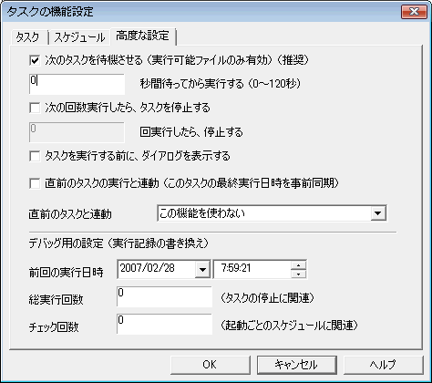

| 選択中タスクの編集 メニュー |
| 選択中タスクの編集 メニュー |

ユーザーが識別しやすいように、任意の名前をつけます。実行ファイル名と無関係な名前をつけても、タスクの実行には影響を与えません。
実際に実行されるファイルの「フルパス名」を入力します。参照ボタンを押すとファイル選択のダイアログが表示されます。
ファイルの実行時に何らかのパラメーター（オプションスイッチ）が必要な場合は、ここに記入してください。
例 ： Windowsメモ帳で、Logfile.txtを開く場合は、「実行するファイル名」にc:\Windows\Notepad.exeを入力し、「パラメーター」にc:\Windows\logfile.txtと入力します。
実行ファイルのみで有効となる、タスク実行時の作業フォルダを指定します。この設定は環境設定の「カレントディレクトリ」設定より優先されます。
機能設定（高度な設定）の「タスクを実行する前に、ダイアログを表示する」がONの場合、このコメントが表示されます。コメントに何も設定されていない場合は、「タスクの名前」が使用されます。
タスク実行時のウインドウの状態を指定します。最大化、最小化、アクティブ等のWin32SDKのShowWindow APIのウインドウ状態変数に対応する設定値です。
電源状態によってタスクの実行を中止します。
Windows Base Servicesの電源管理関数GetSystemPowerStatusより電源状態を取得しています。 通常のノートパソコンなどでの利用を想定しています。UPSなどを用いたサーバ等での利用は想定していません。電源状態の取得状況を確認するには「電源テスト」ボタンを押してください。
このタスクは実行されます。このスイッチをOFFにした場合は、実行期日が来ても実行されません。

「起動ごと」・「日ごと」・「週ごと」・「月ごと」から選択ます。
例 ： 2週間に1回実行する場合は、「週ごと」を選択して、タスクのスケジュールの入力欄には「2」週ごとと入力します。
特定の曜日に実行しない場合は、その曜日にチェックを入れます。チェックを入れた曜日には（実行期日が来ても）タスクは実行されず、翌日以降に順延されます。また、特定の時間帯に実行したくない場合は、その時間帯を入力します。2つの時刻に挟まれた時間帯には（実行期日が来ても）タスクは実行されません。

このタスクが実行中は、次のタスクの実行に移りません。このオプションは実行可能ファイル（拡張子がEXE, COM, BAT, CMD のファイル）でのみ有効です。
このタスクを実行するまで、ｘ秒待ちます。
指定された回数実行すると、このタスクの機能設定（タスク）の「実行する」スイッチがOFFとなります。OFFになったタスクは設定ダイアログに状態「停止中」が表示されます。
実行条件が整ったとき、タスクの実行前に「タスク ｘｘｘ を実行しますか？」というダイアログを表示します。
直前のタスクが実行されたら、このタスクの最終実行日時を現在時にします。
例：全体のバックアップを1ヶ月に1回、重要部分だけのバックアップを1週間に1回する場合、「重要部分だけのバックアップ」は「全体のバックアップ」が行われたときには実行しないというような条件のときに使用するスイッチです。
直前のタスクが実行・非実行によりこのタスクを強制実行、実行中止することが出来ます。これは、他の条件判断（経過時間などによる自動実行）よりも優先されます。
例：この連動判断で「実行中止」と判断された場合は、スケジュール上実行するタイミングであっても「実行中止」となります。
このタスクの実行履歴を編集できます。おもにデバッグ時に使用することを目的としています。
総実行回数は、実際にタスクが実行された回数。チェック回数は、タスクの期日をチェックした回数で、実行・非実行にかかわらず毎回カウントアップするカウンターです。
選択中タスクの機能設定（タスク）「実行する」をOFFにします。
選択中のタスクを実行します。機能設定の実行条件に関わらず実行されます。
タスク一覧での表示順序（実行もこの順番に行われる）を上下させます。